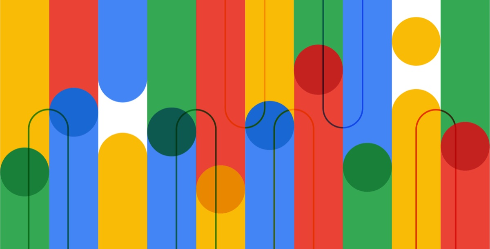

Secure AI Framework Risk Map
How AI systems get attacked and defended, in one map the industry now uses.

- Client
- Google, Privacy, Safety & Security
- My role
- Information design, technical visualization, stakeholder validation
- Worked with
- Security engineering teams other teams and roles
- Timeline
- year and length
- Made
- The SAIF Risk Map other deliverables: reports, slides, versions
- Used by
- Google product teams and the Coalition for Secure AI (CoSAI)
How AI gets attacked and defended.
The experts knew the risks and the controls in depth. what made it hard to follow: how many risks and controls, what form it lived in (documents, spreadsheets, talks), and why it wasn’t landing
Product teams and the wider industry.
Google product teams and industry organizations needed a way to navigate AI security risks and the controls for each. what they needed to do with it: decide, build, audit, adopt
The five steps, on this project.
-
Listen
who you sat down with, what they walked you through, and what you heard that they hadn’t said outright
Artifact: interview notes or the source material, redacted if needed -
Ask
the questions a product team or an outside reader would ask, and the one that unlocked the structure
Artifact: a list of audience questions -
Edit
what stayed in for this audience, what was set aside, and why
Artifact: a cut list or an early, crowded draft -
Shape
the structure you chose (how risks, controls, and responsibilities relate) and the order a newcomer reads it in
Artifact: a structure sketch or wireframe -
Craft
The map was visualized with technical accuracy, and that accuracy was validated directly with security engineering teams. the visual decisions that made it readable, and how many rounds of review it took
Artifact: the final map, or a detail of it
What was made.

Adopted as a foundational reference for the Coalition for Secure AI, an open-source, cross-industry consortium.
- Understood faster
- Retold for you
- Ready for any audience
proof: where else it’s used, a quote from an engineer or partner, any numbers
Who was involved.